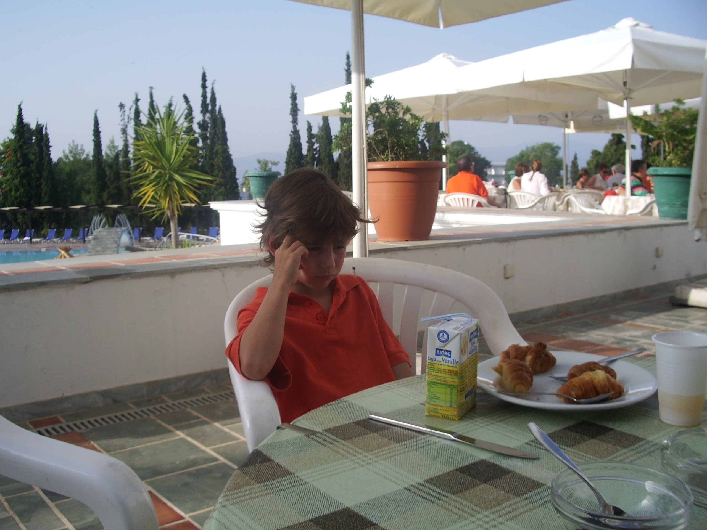

Moi ?
et bien ...


Si vous êtes ici, vous vous êtes sûrement perdu ! Ou alors vous souhaitez me contacter d’urgence. Je m’appelle Benjamin Lugan. J’étudie en première année de DUT MMI à Montbéliard. Cet exercice pédagogique vise à nous faire créer un site internet. Plusieurs contraintes nous ont été donné. Un long travail en amont a été nécessaire. Le thème était «La face cachée d’Internet». Il ne s’agissait pas du «Deep Web» mais de la pollution environnementale d’Internet. La création globale du site a commencé en septembre et s’est terminée mi-décembre. Pour plus d’informations, vous pouvez directement me contacter depuis le site. Sinon, vous pouvez me suivre ou me contacter via mes réseaux sociaux.
Me contacter :
Mes réseaux sociaux :